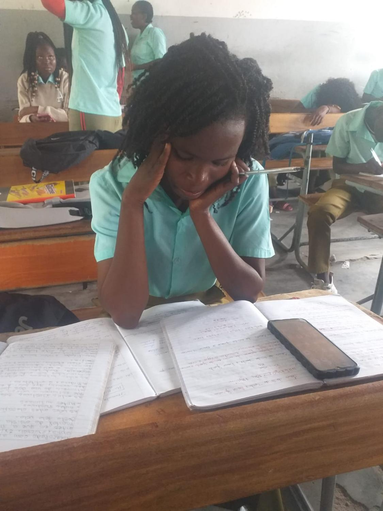

Contextualização e importância do tema no ambiente escolar
A saúde mental dos estudantes tem-se tornado uma preocupação cada vez maior. A pressão para ter boas notas, o volume de trabalhos, as expectativas da família e a comparação com os colegas geram ansiedade e stress que afectam o bem-estar e o rendimento escolar.
Muitos alunos sofrem em silêncio: dores de cabeça, dificuldade em dormir, falta de concentração, irritabilidade ou sensação de esgotamento. Falar sobre saúde mental na escola é essencial para que ninguém se sinta sozinho e para que se encontrem formas de apoio.

Momento de cansaço e pressão durante o estudo